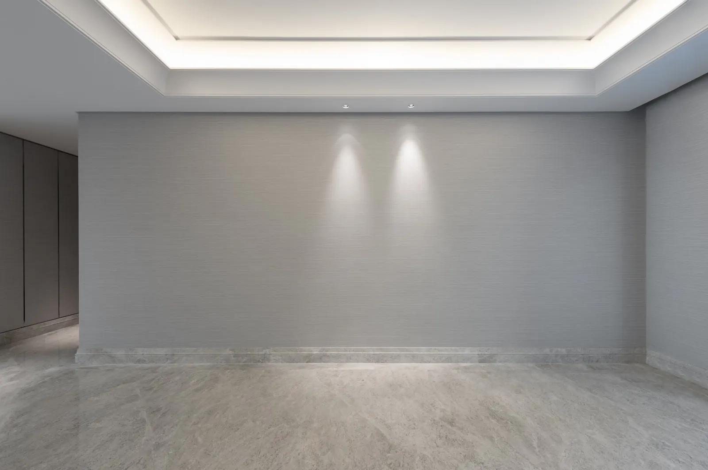

건설·건축 현장 30년, 종합 시공 전문
현장을 직접 보고, 직접 시공합니다
칸막이·천정공사, 원상복구, 인테리어, 공장보수, 수장공사까지. 하청에 재하청을 주지 않고 30년 경력의 기술진이 설계부터 마감까지 책임집니다.
24시간 연중무휴 상담
- 30여 년
- 건설·건축 현장 한 길
- 직접 시공
- 하청·재하청 없음
- 5개 분야
- 철거부터 마감까지 한 팀
- 전국
- 현장 직접 방문
사업분야
공간을 나누는 일부터 비우는 일, 고치는 일까지 실내 공사를 한 곳에서 맡습니다.


하청에 재하청을 주지 않습니다. 30년 경력의 전문가가 현장을 직접 진단합니다.
대경기업은 지난 30여 년간 건설과 건축 현장의 한 길만을 걸어온 종합 시공 전문 기업입니다. 주거·상업 공간은 물론 까다로운 산업 현장과 공장 보수까지 직접 발로 뛰며 기술과 현장 노하우를 쌓아왔습니다.
- 01
직접 시공
하청에 재하청을 주지 않습니다. 각 분야의 베테랑 기술진이 직접 시공합니다.
- 02
현장 직접 진단
30년 경력의 전문가가 현장을 직접 보고, 설계부터 마감까지 책임집니다.
- 03
기초까지 정직하게
보이지 않는 기초 공사 하나에도 타협하지 않습니다.


진행 과정
공사 종류와 관계없이 보통 이 순서로 진행합니다.
- 01
상담·예약
전화나 견적문의로 공사 내용과 현장 방문 날짜를 정합니다.
- 02
현장 진단
현장을 직접 보고 공사 범위와 지금 상태를 확인합니다.
- 03
견적
확인한 범위를 바탕으로 공정별 견적을 드립니다.
- 04
시공
정한 일정에 맞춰 골조부터 마감까지 진행합니다.
- 05
마감·정리
폐기물을 치우고 청소한 뒤 현장을 넘겨 드립니다.
견적은 현장을 보고 정확하게 드립니다
공사 종류와 현장 위치, 방문을 원하는 날짜를 남겨 주시면 확인 후 연락드립니다.